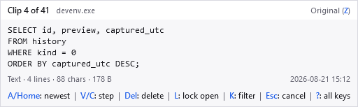

A keyboard-driven multiple-clipboard manager for Windows.
Hold Ctrl, tap V to step back through what you have copied, release to
paste. No window, no mouse, no hands leaving the keyboard. That gesture — a jog wheel for your
clipboard — is the whole point of the program; everything else exists to support it.

What the gesture shows while Ctrl is held: the clip about to be pasted, where it came from,
and where it sits in the stack.
| Keeps everything you copy | Text with all its clipboard formats, images and file lists, in a searchable store beside the program. |
| Pastes without a window | The gesture is the chord you already use. One tap is an ordinary paste; the overlay appears from the second. |
| Searches mid-gesture | Press F while the overlay is up and type. |
| Keeps formats intact | A paste into Word or Excel arrives as it left, because every format is stored rather than just the text. |
| Stays out of the way | No main window, no account, and no network access except the update check, and only when you ask for it. |
PasteJump is portable: unzip it and run it. The single-file download is PasteJump.exe plus the
manual, the licence and a readme, and it needs no .NET runtime on the machine. It writes its data to a
data folder next to the executable, so a copy on a USB stick carries its own history.
Getting started covers the three downloads and the first run.
| Getting started | Which download to take, the first run, and the first thing to try. |
| The gesture | Every key that works while
Ctrl is held. The one page worth reading in full. |
| Clips and history | PasteJump keeps what you copy in two places. Confusing them is the easiest mistake to make here. |
| The history window | Searching, copying back, deleting, and removing duplicates. |
| Themes | Nineteen of them, or write your own. |
| Settings | Every option, tab by tab. |
| The tray icon | The menu, what the colour means, and checking for updates. |
| Settings reference | Every setting by its name in the file, with its default. For editing the JSON by hand. |
| Importing from Clipjump | Bringing an existing Clipjump history and clip stack across. |
| Another clipboard manager | Read this if copying works and pasting silently does nothing. |
| Troubleshooting | The symptoms that have actually been reported, and what each one means. |
| Limits and omissions | What PasteJump deliberately does not do, and the licence. |